Capítulo 8 Probabilidad: los modelos
Un modelo es una representación simplificada de un proceso observable, es una formalización de algunos aspectos de la realidad. La expresión “todos los modelos son erroneos, pero algunos son útiles” atribuida a Box and Draper (1987), sintetiza la idea de simplificación, de recorte, de selección deliberada de algunos componentes para describir, explicar y predecir. Por definición, un modelo es teórico y propone articulación entre conceptos, con nexos deductivos, inductivos, de analogía, etc. No es
arbitrario, ya que deben tenerse razones para suponer que el modelo se
sostiene: no es espera que esté en contradicción con lo que se observa, pero en todos los casos es una aproximación a lo que sucede en
la realidad. Tratamos de modelar (o modelizar) lo que observamos a fin
de simplificarlo, pero un modelo puede ser más o menos adecuado a la
realidad, en ese sentido “todos son erroneos”, no hay reproducción teórica de lo observable. La riqueza y complejidad de los fenómenos sociales no se menoscaba porque se usen modelos, salvo si se comete el error de confundir el modelo con la realidad.
Los modelos de probabilidad, son un tipo particular de modelos, y constituyen asignaciones a priori de probabilidades a eventos, en base al cumplimiento de ciertos supuestos que condensan la simplificación del proceso real. Por esa razón, estas asignaciones llevan implícita el condicional de satisfacción de requisitos. La idea de simplificar está aquí utilizada en el sentido de elegir algunos aspectos de la realidad para construir un modelo que luego se usa para asignar probabilidades a los diferentes resultados posibles. Disponer de un modelo de
probabilidad permite calcular probabilidades de manera sencilla bajo
ciertos supuestos, que deben explicitarse.
8.1 Concepto de modelización
La asignación a priori de probabilidades, presentada antes con los ejemplos elementales de la moneda o el dado es parte de una forma muy general de tratar con los fenómenos que dependen del azar. El supuesto inicial de probabilidad \(1/2\) a cada lado de la moneda, constituye un modelo de probabilidad, es una anticipación acerca de lo que se espera que suceda. El modelo que resume el supuesto de iguales chances para todos los resultados, se llama distribución uniforme, es válido también para un dado, si está equilibrado, o para cualquier fenómeno aleatorio en el que se pueda suponer que los resultados son igualmente probables. La expresión formal de ese modelo es la siguiente:
“Si un experimento aleatorio tiene distribución uniforme y k resultados posibles, entonces \(P(A_{i}) = \frac{1}{k}\), donde \(A_{i}\) es uno cualquiera de los \(k\) resultados”
Por lo tanto si se trata de una moneda (2 caras) la probabilidad de cualesquiera de sus caras será \(1/2\), si es un dado, cada lado tiene probabilidad \(1/6\), y si es un icosaedro regular (veinte caras iguales, parecido a un globo de espejos) cada cara tendrá probabilidad 1/20 de salir.
La representación gráfica de este modelo, es para cada uno de los ejemplos, la siguiente:
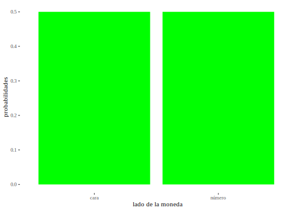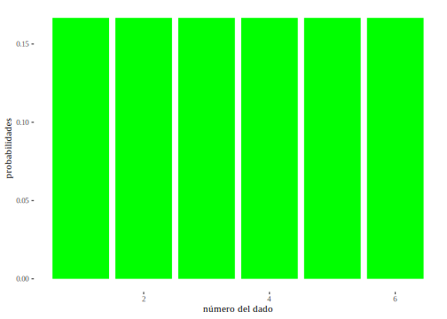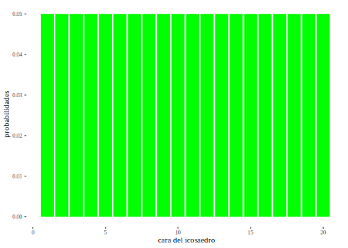
En estos gráficos, la idea de uniformidad (para todos los eventos la misma probabilidad) se transmite en la igual altura de todas las columnas.
Además de este modelo uniforme, en este capítulo presentaremos cinco modelos de probabilidad que serán necesarios para lo que sigue de nuestros contenidos; el primero para variables discretas y los demás para continuas. Hay una gran cantidad de modelos que permiten asignar probabilidades a priori a diferentes fenómenos observables. El tratamiento que haremos a continuación será de carácter utilitario, es decir estará centrado en el uso que podemos hacer de cada distribución teórica. Haremos las referencias matemáticas mínimas que sean necesarias para comprender las propiedades y condiciones de aplicación de los modelos.
8.2 Distribución binomial
Esta distribución se usa para modelar la repetición de un proceso aleatorio que puede dar solo dos resultados, a los que se llama “éxito” y “fracaso”. La elección de cuál es éxito es arbitraria y corresponde a la categoría que el investigador toma como de interés. La variable aleatoria que se considera es el número de veces que se obtienen éxitos, o simplemente el número de éxitos que resultan luego de una cierta cantidad de repeticiones de la experiencia. La condición para que este modelo sea válido es que cada repetición sea independiente de las anteriores, es decir, que cada realización del experimento no incida sobre la siguiente.
Nuevamente con la moneda equilibrada que hemos tratado, este modelo va a facilitar el cálculo de, por ejemplo, qué probabilidad hay de obtener 3 caras en 4 tiradas de la moneda. Resolvamos primero el problema de manera manual. En la tabla siguiente mostramos los resultados posibles de ese experimento (lanzar cuatro veces una moneda equilibrada) y el valor que corresponde a la variable aleatoria “número de caras”, a la que llamaremos x42.
| Resultado del experimento | Valor de la variable “número de caras” x |
|---|---|
| XXXX | 0 |
| XXXC | 1 |
| XXCX | 1 |
| XXCC | 2 |
| XCXX | 1 |
| XCXC | 2 |
| XCCX | 2 |
| XCCC | 3 |
| CXXX | 1 |
| CXXC | 2 |
| CXCX | 2 |
| CXCC | 3 |
| CCXX | 2 |
| CCXC | 3 |
| CCCX | 3 |
| CCCC | 4 |
Como estos 16 resultados son igualmente probables, le corresponde una probabilidad de 1/16 (0.0625) a cada uno, por lo que podemos calcular las probabilidades de cada valor sumando los que corresponden a las formas en que pueden lograrse. Por ejemplo, tres caras (x=3) puede ser consecuencia de cualquiera de los eventos XCCC, CXCC, CCXC, CCCX, por lo que hay cuatro eventos a su favor y su probabilidad es 4/16. Resumiendo entonces la tabla anterior, tenemos:
| x | P(x) |
|---|---|
| 0 | 1/16 (0.0625) |
| 1 | 4/16 (0.25) |
| 2 | 6/16 (0.375) |
| 3 | 4/16 (0.25) |
| 4 | 1/16 (0.0625) |
| Total | 1 |
Como esperábamos, “lo más probable” es obtener dos caras, porque se espera que la moneda caiga cara la mitad de las veces, ahora sabemos también cuán probable es que caiga una cantidad diferente de veces cara. La respuesta a la pregunta que formulamos arriba es 0.25 y lo expresamos simplemente:
\[P(x = 3) = 0.25\]
Para construir la tabla y responder a la pregunta hemos usado como información:
la cantidad de repeticiones del experimento (\(n=4\))
la probabilidad del evento cada vez que se lo repite (\(p=0.5\))
el número de veces cuya probabilidad calculamos (el número de éxitos) (\(x=3\))
Esta información es suficiente para aplicar el modelo binomial, que se va a escribir formalmente como: \[B(x, n, p)\] En la que la \(B\) es por binomial, \(n\) es el número de repeticiones, \(p\) es la probabilidad de éxito a cada repetición y \(x\) el número de éxitos cuya probabilidad se calcula.
Cuando se trata de variables discretas como en este ejemplo, los modelos admiten el cálculo de la probabilidad:
- exacta: de un valor particular de la variable, es decir un determinado número de éxitos: \(P(X=x)\)
O bien
- acumulada: de un conjunto de valores menores o iguales a un valor dado: \(P(X\leq x)\)
Si se requiere la probabilidad de los valores mayores a uno dado \(P(X>x)\), se complementa (se resta de 1) la probabilidad acumulada.
Cuando se trata de variables continuas, las probabilidades exactas son cero, por lo que solo pueden calcularse las acumuladas: \(P(X\leq x)\) y su complemento a uno: \(P(X>x)\)
Resulta claro que la realización manual de estas operaciones es larga y engorrosa, sobre todo en situaciones reales donde hay más observaciones que en la moneda. Por ejemplo, un examen consiste de 20 preguntas de opción múltiple con cinco opciones de respuesta cada una, una sola de las cuales es correcta. Para aprobar el examen es necesario contestar bien al menos 12 de ellas (el 60%). Se pregunta: ¿Qué probabilidad tiene, alguien que rinda el examen, de aprobarlo solo por azar? Es decir si responde a cada pregunta por sorteo. Es una problema de distribución binomial: hay 20 repeticiones (una por cada pregunta) de un experimento que tiene 0.20 (1/5) de probabilidad de éxito. Para aprobar se necesitan al menos 12 éxitos. La resolución manual de este problema requiere considerar que para aprobar los éxitos pueden ser 12, 13, 14, etc. Y que cada cantidad de éxitos puede lograrse de varias formas. Doce aciertos pueden provenir de las doce primeras preguntas, o de las diez primeras y las dos últimas, o muchas otras combinaciones posibles. Así como los tres éxitos en los cuatro lanzamiento de la moneda se dieron como 4 de las 16 combinaciones posibles; ahora en el caso del examen, 12 éxitos pueden obtenerse de 125970 maneras diferentes, respecto de un total de 1048576 combinaciones posibles de aciertos y errores. Evidentemente, no son volúmenes de datos con los que se pueda operar manualmente.
En este ejemplo, la probabilidad de aprobar se escribe así: \[B( X\ge12, n=20, p=0.20)\]
Los valores de \(n\) y \(p\) son los parámetros de la distribución; establecen las caraterísticas particulares del caso al que se aplica el modelo binomial. Por su parte, \(X\) es la variable aleatoria, que puede asumir cualquier valor (discreto) entre cero y veinte.
La fórmula para calcular la probabilidad de un número exacto \(x\) de éxitos bajo un modelo binomial de parámetros \(n\) y \(p\) es: \[P(X=x)= B(X=x,n,p)=\begin{pmatrix}
n\\
x
\end{pmatrix} *p^{x}*(1-p)^{n-x}\]
Y para las acumuladas, debe sumarse desde cero hasta la cantidad de éxitos pedida: \[P(X\leq x)=B(X\leq x,n,p)= \sum_{i=0}^{x}\begin{pmatrix} n\\ i \end{pmatrix} *p^{i}*(1-p)^{n-i} \]
El cálculo de esta probabilidad por medio de la fórmula es largo, por lo que usamos calculadoras electrónicas para hacerlo. Hay algunas on-line, también pueden usarse hojas de cálculo y la mayoría de los paquetes estadísticos las incluyen; existe una aplicación para teléfonos llamada “Probability Distributions”, algunas de estas calculadoras muestran también el gráfico de la distribución. Por todos estos medios (calculadora on-line, hoja de cálculo, software estadístico, aplicación) se calculan probabilidades bajo diversos modelos, que se verán más adelante. Las diferencias entre ellos están en cuál es la probabilidad que calculan por defecto. Además de la exacta (\(P(X=x)\)), lo más frecuente es que ofrezcan la acumulada (\(P(X\le x)\)), pero también puede que den su complemento (\(P(X>x)\)). En cada caso hay que verificar qué convención se está aplicando para poder interpretar el resultado.
En R disponemos de las rutinas para calcular probabilidades simples y acumuladas bajo diferentes modelos. Para la binomial, el comando dbinom, tiene como argumentos: el número de éxitos cuya probabilidad se solicita(\(x\)), el número de repeticiones (\(n\), que en R se llama size) y la probabilidad de éxito a cada repetición (\(p\), en R, prob). La probabilidad de obtener una cara al lanzar una moneda equilibrada (\(p=0.5\)), dos veces es:
## [1] 0.5Y la probabilidad de tres caras en cuatro lanzamientos de una moneda equilibrada (\(P(X=3)\)) es:
## [1] 0.25El la que hemos pedido un redondeo a dos decimales.
Para pedir la probabilidad acumulada, como por ejemplo la de obtener tres caras o menos (\(P(X\leq 3)\)) en cuatro lanzamientos, el comando es pbinom, con los mismos argumentos:
## [1] 0.9375Que es la suma de las probabillidades exactas desde cero hasta tres:
## [1] 0.9375La respuesta al problema del examen se resuelve en dos pasos, porque para aprobar hacen falta 12 aciertos o más. Entonces, primero calculamos la probabilidad acumulada de 11 (\(P(X\leq 11)\)), que es la probabilidad de no aprobar (obtener 11 aciertos o menos):
## [1] 0.9999Y luego complementamos el resultado para obtener la probabilidad de superar los 11 aciertos
\(P(X>11)=\) 1.02^{-4}.
Como se observa, si se respeta el orden de los argumentos, \(x\), \(n\) y \(p\), no hace falta indicar qué es cada cosa.
Otro ejemplo es aquel en el que se elige una muestra aleatoria de 15 estudiantes de primer año de la carrera de Biología para un experimento. Si se sabe que la proporción de mujeres de primer año de esa carrera es del 70%, ¿Cuál es la probabilidad que en la muestra resulten todas mujeres?. Cada persona que se selecciona aleatoriamente es una repetición, en la que la probabilidad que esa persona sea mujer es 0.70, y se pregunta por la probabilidad de hallar 15 éxitos. El resultado es:
## [1] 0.004747562Y se expresa así: \[P(X=15)=B(15,15,.7)=0.0047\]
Al final del capítulo veremos con más detalle cómo pedir estas probabiidades a R.
8.2.1 Esperanza y varianza
En este modelo de probabilidad, la esperanza es \(n*p\), que representa el número esperado de casos favorables a obtener en \(n\) repeticiones. En el primer ejemplo, la esperanza es \(4*0.50=2\), que quiere decir que en 4 tiradas de la moneda equilibrada, esperaríamos obtener 2 caras, como sabemos, esto es lo que sucede luego de un gran número de repeticiones del experimento. En el ejemplo de la selección de estudiantes, la esperanza es \(0.70*15=10,5\), aunque este número decimal no es una cantidad posible de casos favorables (mujeres) a obtener en la muestra, es el promedio a futuro, luego de la realización reiterada de este experimento muchas veces. Es decir que si el experimento de muestrear 15 estudiantes se repitiera muchas veces, en promedio se encontrarían entre 10 y 11 mujeres en cada muestra.
En el ejemplo del examen, la esperanza \(20*0.20=4\) indica que el número medio de aciertos que se espera lograr por puro azar es de 4.
La varianza de la distribución binomial es \(n*p*(1-p)\), que es una medida de la variabilidad del proceso. Más adelante volveremos sobre este tema.
El gráfico de esta distribución se construye calculando las probabilidades de los diferentes valores de \(x\), que puede ir desde 0 hasta el número total de repeticiones del experimento. El siguiente es el correspondiente a 20 repeticiones con diferentes valores de \(p\):
Observemos la forma en que aparece representada la diferencia entre las varianzas de las distribuciones, la màxima ocurre con \(p=0.50\).
8.3 Distribución normal
La mayoría de los fenómenos naturales, sociales, psicológicos no tienen distribución uniforme, es decir, no es igualmente probable que resulte cualquiera de los resultados. Por ejemplo, para una determinada población, el peso de las personas al nacer tiene un valor promedio y cuando alguien nace se espera que tenga un peso cercano a ese valor medio. No es igualmente probable que un niño o una niña nazcan con 3400 gramos que con 5800. Son menos frecuentes quienes nacen con pesos muy por encima o muy por debajo del promedio. De modo similar sucede con medidas como el puntaje en una escala de cociente intelectual, posiciones políticas, actitudes; se hallan con mayor frecuencia valores cercanos al promedio y la probabilidad de encontrar personas muy por encima o muy por debajo de ese promedio es menor: los valores extremos son menos probables que los centrales. Para este tipo de fenómeno, hay un modelo que suele ajustar bien las probabilidades, se llama distribución normal43 y su representación gráfica, una curva unimodal, simétrica, de forma acampanada es llamada “campana de Gauss”44 en referencia a Johann Carl Friedrich Gauss45.
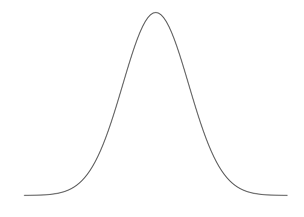
Un primer elemento a tener en cuenta es que, a diferencia de los gráficos anteriores, ahora se trata de una curva con trazado continuo, porque se usa para modelar variables continuas. Recordemos que cuando se construyeron las distribuciones de frecuencia, resultaba imposible enumerar todas las categorías de una variable de este tipo, ya que son infinitas. Dijimos en ese momento que no es posible indicar la frecuencia de un valor único de una variable continua. Lo mismo vale ahora para las probabilidades: no calculamos probabilidades para valores simples de variables continuas, no se calculan probabilidades exactas, las que sí se calculan son las probabilidades acumuladas y, como sucedía con las frecuencias acumuladas, éstas están representadas gráficamente en el área bajo la curva, pero en lugar de sumar las frecuencias de valores discretos, se realiza una operación que se llama integración46.
Dado que la curva que describe la distribución normal es unimodal y simétrica; el modo, la media y la mediana coinciden, el coeficiente de asimetría es cero (\(g_{1}=0\)) y la distribución es mesocúrtica (\(g_{2}=0\)).
El cálculo de las probabilidades bajo el modelo normal -o, lo que es lo mismo, de las áreas bajo la curva-, es muy complejo, porque requiere calcular una integral de manera iterativa. Con mayor razón aun que con la binomial, es necesario recurrir al software para calcular probabilidades. El problema es que este modelo se adapta a una diversidad de situaciones; el peso al nacer, el IQ, las variables son muy diferentes al “numero de éxitos” de la binomial. ¿con qué método calcularemos probabilidades para fenómenos tan disímiles? Cualquier software que se elija permite calcular la probabilidad para una variable abstracta, sin unidades, adaptable a una diversidad de fenómenos. Se trata de la variable \(z\), que ya fue definida y que mide el número de desviaciones estándar -contadas desde la media-, a las que se encuentra un caso individual. Una de las aplicaciones prácticas de esta variable es que permite comparar variables que miden cualidades muy diferentes. Sabemos ya que la cantidad de desviaciones estándar (\(z\)) es una medida de lo cerca o lejos que un caso se encuentra del promedio. Si la variable en estudio es adecuadamente modelada con la distribución normal, entonces podremos conocer la probabilidad de hallar casos, por ejemplo a más de dos desviaciones estándar de la media y eso tendrá una inmediata traducción a valores de la variable.
Recordemos que la variable \(z\) está definida, para un valor particular de \(x\) como:
\[z = \frac{x - \overline{x}}{s}\]
Y que tiene media igual a cero y desviación estándar igual a uno. Si \(x\) tiene una distribución normal con una media \(\overline{x}\) y una desviación estándar \(s\), entonces \(z\) tiene distribución que se llama normal estándar.
Su gráfico está centrado en cero:
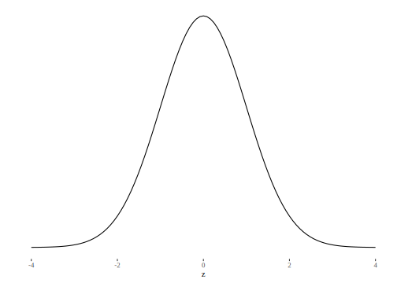
Cualquier hoja de cálculo (como OpenOfficeCalc o Excel) o calculadora de probabilidades on line o como aplicación, calcula las probabilidades (o áreas) bajo la curva normal. En R es muy directo, porque del mismo modo en que dispusimos de una función para la binomial acumulada (pbinom), tenemos ahora el comando pnorm para obtener probabilidades acumuladas (\(P(Z\leq z)\)) bajo un modelo de distribución normal estándar. Y, al igual que con cualquier otra distribución, el valor de \(P(Z>z)\) se logra restando de 1, que es el área completa bajo la curva. Por ejemplo, el área acumulada por debajo de \(z=0\) es la mitad de la campana, \(P(Z\leq 0)=0.5\), por lo que \(P(Z>z)=0.5\).
Cuyo gráfico es:
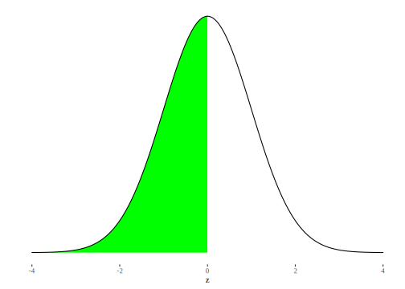
El área sombreada vale 0.50.
Para el área por debajo de \(z=2\), redondeado a cuatro decimales:
## [1] 0.9772Y su representación:
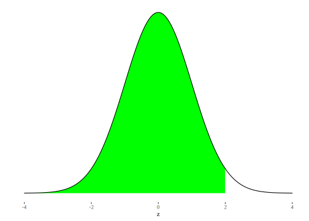
Queda delimitada por debajo de \(z=2\) un área de 0.9772. \(P(z\leq2)=0.9772\).
Si solicitamos las probabilidades acumuladas por debajo de diferentes valores de \(z\), empezando con los negativos, pasando por el cero y siguiendo por los positivos, se obtiene la figura 8.1.
Figura 8.1: Probabilidades acumuladas bajo la distribución normal para diferentes valores de \(z\)
Las probabilidades acumuladas (es decir, las áreas a la izquierda) van creciendo desde casi cero en el valor más pequeño que pusimos (\(z = -4\)) y llegan hasta casi uno en el máximo valor (\(z = 4\)). En el modelo matemático, \(z\) tiene como campo de variación todos los valores, es decir, desde menos infinito hasta más infinito (\(-\infty\); \(\infty\)), pero como vemos, en la realidad, los valores -4 y 4 son muy extremos, en el sentido que las probabilidades acumuladas son casi cero y casi uno respectivamente. Aunque el modelo teórico tiene un comportamiento asintótico respecto del eje horizontal, en el gráfico, la curva se confunde con el eje para valores cercanos a 4. La notación para estos resultados es la siguiente (usando hasta cuatro decimales que es lo más frecuente), por ejemplo: \(P(z\leq-2)= 0.0227\) ó también \(P(z\leq1) = 0.8413\). Las representaciones gráficas de estas probabilidades son las siguientes:
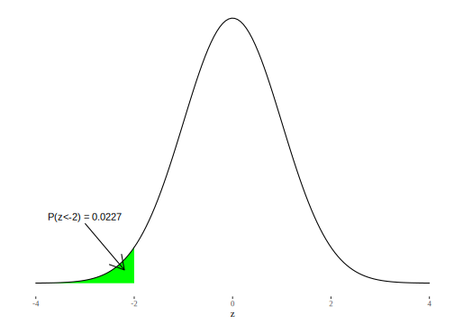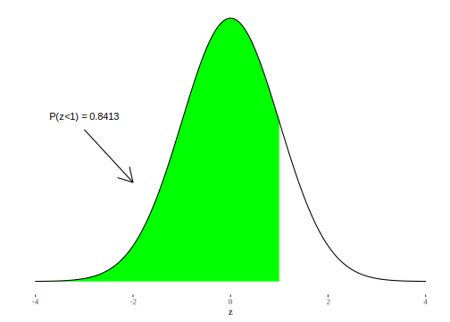
A continuación vemos la representación gráfica de la relación entre las probabilidades “por encima” y “por debajo” de \(z=1\), sabiendo que \(P(z\leq1)+P(z>1)=1\).
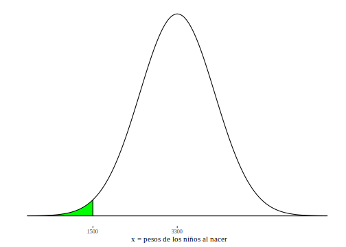
También se pueden identificar probabilidades entre valores de z, por ejemplo cuál es el área entre -1 y 1 (es decir cuál es la probabilidad de encontrar a z entre esos valores). Esto se escribe así: \(P(-1<z<1)\). Para calcularla solo usaremos la información sobre la probabilidad acumulada: el área por debajo de \(-1\) vale \(0.1587\) y el área por debajo de \(1\) es \(0.8413\), si restamos esas dos áreas tendremos lo que queda entremedio: \(0.8413 - 0.1587 = 0.6835\), gráficamente:
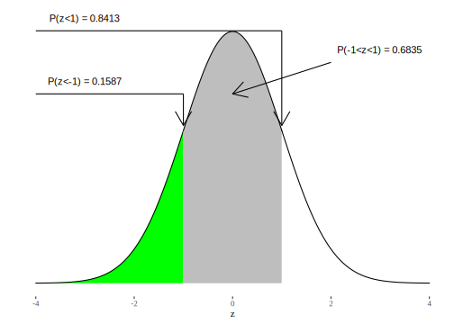
El área comprendida entre -2 y 2 se calcula del mismo modo, solicitado a R, se obtiene: \[P(z < -2) = 0.0228 \] \[P(z < 2) = 0.9972\]
\[P(- 2 < z < 2) = P(z < 2) - P(z < - 2) = 0.9772 - 0.0228 = 0.9544\]
Y los valores \(\pm3\):
\[P(- 3 < z < 3) = P(z < 3) - P(z < - 3) = 0.9986 - 0.0013 = 0.9973\]
La regla empírica que se mencionó antes tiene aquí su origen. Ya que si la distribución es similar a la normal (unimodal y simétrica), entonces aproximadamente el 68% estará a menos de una desviación estándar de la media, el 95% a menos de dos, y el 99.7% a una distancia no mayor a tres desviaciones estándar. Son los valores de \(z\), que mide distancia hasta la media, expresada en términos de desviaciones estándar.
8.3.1 Cuantiles
De mismo modo que con las distribuciones de frecuencia, los valores de la variable que acumulan una determinada probabilidad son los cuantiles. El valor \(z=-1\) es el cuantil \(0.1587\) de la variable y \(z=2\) es el cuantil \(0.9772\), que suelen leerse como percentiles 15.87 y 97.72 respectivmente.
Para determinar ahora los valores de \(z\) que acumulan cierta probabilidad, se necesita la operación inversa a la que se realizó hasta aquí, porque hay que hallar cuál es el valor de la variable (\(z\)) que deja por debajo una determinada probabilidad. Según la definición de percentiles, el percentil \(P_{r}\) de la variable es el valor por debajo del cual la probabilidad de hallarla es \(r\%\). Gráficamente, se trataría de fijar el área (\(r\%\)) y el problema es determinar cuál es el \(z\) que la acumula.
Usamos un software (al final vemos cómo hacerlo con R) para solicitar este valor: a partir de la probabilidad acumulada, pedimos el valor de \(z\). Por ejemplo, el percentil \(95\) (\(P_{95}\)) de la distribución normal es (al final veremos como pedirlo a R):
## [1] 1.6449El valor 1.6449 acumula el 95% o bien \(P(z\leq1.6449=.95)\). Y del mismo modo el percentil 99 es:
## [1] 2.3263\[P_{99}=2.3263\]
Por la simetría de la distribución, los percentiles complementarios son valores opuestos de la variable. Los percentiles 5 y 1 son:
## [1] -1.6449## [1] -2.3263Con los que, bajo el modelo normal estándar: \(P_{5}=-1.6449\) y \(P_{1}=-2.3263\)
Por el uso que haremos de la distribución normal hay algunos percentiles de mucha importancia y conviene recordar: son los que delimitan áreas centrales de probabilidad .90, .95 y .99.
Para determinarlos, hay que identificar a qué valores de \(z\) corresponden. Para el área central de 0.90, el área de 0.10 que queda fuera se reparte de manera simétrica en las dos colas de la distribución, a razón de 0.05 en cada una:
Entonces, hay que determinar los valores de \(z\) que acumulan \(.05\) y \(.95\), dicho de otro modo, hay que calcular \(P_{5}\) y \(P_{95}\), que son:
## [1] -1.644854## [1] 1.644854Redondeados a dos decimales:
## [1] -1.64## [1] 1.64Con lo que los valores \(\pm1.64\) delimitan un área central en la que hay una probabilidad 0.90 de encontrar a la variable normal estándar.
\[P(- 1.64 < z < 1.64) = 0.90\]
Del mismo modo, para el área central de \(0.95\), el área complementaria de \(0.05\) se reparte en dos, y los percentiles que se requieren son: \(P_{2.5}\) y \(P_{97.5}\), que son:
## [1] -1.96## [1] 1.96Así: \[P(- 1.96 < z < 1.96) = 0.95\]
Y para \(0.99\), el \(0.01\) restante se divide en dos, por lo que los \(z\) que se buscan son los valores que acumulan \(0.005\) y \(0.995\), es decir: \(P_{0.5}\) y \(P_{99.5}\), que resultan:
## [1] -2.58## [1] 2.58Entonces: \[P(- 2.58 < z < 2.58) = 0.99\]
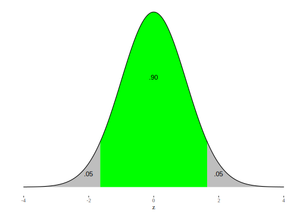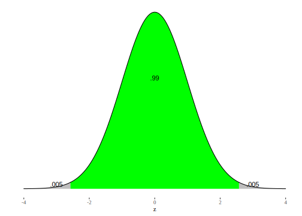
8.3.1.1 Usos de la distribución normal
La distribución normal es muy valiosa, por muchas razones, de las cuales nos interesan dos.
La primera es que es adecuada para modelar muchos fenómenos observables, en especial variables biológicas como el peso de las personas al nacer, la talla para diferentes edades. Hay variables psicológicas como el coeficiente intelectual, para las que se elaboran instrumentos de medición cuyos puntajes se distribuyen de manera normal. Otras variables, como el rendimiento en la escuela, o las actitudes medidas con escalas numéricas, a menudo, pueden aproximarse de manera adecuada con un modelo normal.
La segunda razón es que cuando se extraen muestras aleatorias de una población, algunas medidas que se calculan sobre esas muestras tienen una distribución que se aproxima a la normal a medida que las muestras tienen mayor tamaño. Eso será lo que nos permita realizar nuestras primeras estimaciones de valores poblacionales a partir de muestras.
Hasta este punto trabajamos con la distribución normal de una variable abstracta, sin unidades, a la que llamamos \(z\), a cuyos valores pudimos asignar probabilidades. La función que describe la curva acampanada está expresada en términos de \(z\). Pero cuando vamos a trabajar con una variable real, como las que mencionamos, por ejemplo, el peso al nacer o el CI, es necesario disponer de una variable concreta, a la que llamamos \(x\). ¿Qué relación tiene esa variable, cuya distribución podría modelarse bien con una curva normal, con la \(z\), que nos permite hallar las probabilidades bajo el modelo normal? Es decir, ¿qué relación tiene \(x\) con \(z\)? Ya la conocemos, porque \(z\) es el desvío estándar que tenemos definido, es:
\[z = \frac{x - \overline{x}}{s}\]
Que cuenta la cantidad de desviaciones estándar (\(s\)) a que se encuentra un valor (\(x\)) de la media (\(\overline{x})\). Para encontrar probabilidades correspondientes a valores reales de una variable y no solo los \(z\) abstractos, debemos transformar esos valores en puntajes \(z\), con la expresión de arriba.
Veamos esto en un ejemplo: a partir de las historias clínicas de varios años de un hospital materno infantil, conocemos que el peso medio en el momento de nacer de niños varones, a término, con madre entre 20 y 29 años es de 3300 gramos y que la desviación estándar es de 800 gramos. Además sabemos que la distribución normal es adecuada para describir la variable peso al nacer. Entonces podemos calcular la probabilidad que un niño varón a término, nazca con un peso por debajo de los 1500 gramos. El problema es averiguar el área sombreada en el siguiente gráfico:
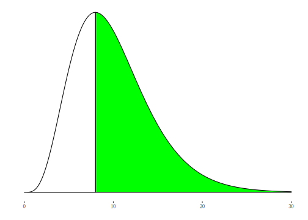
Para calcular el área marcada -que corresponde a la probabilidad solicitada-, vamos a transformar el valor de \(x\) (1500) a puntaje \(z\), haciendo:
\[z = \frac{x - \overline{x}}{s} = \frac{1500 - 3300}{800} = - 2.25\]
Ahora es equivalente solicitar la probabilidad de \(x\) menor o igual a 1500 que la de \(z\) menor o igual a -2.25, en símbolos:
\[P(x \leq 1500) = P(z \leq - 2.25)\]
Y el gráfico anterior expresado en términos de \(z\) resulta:
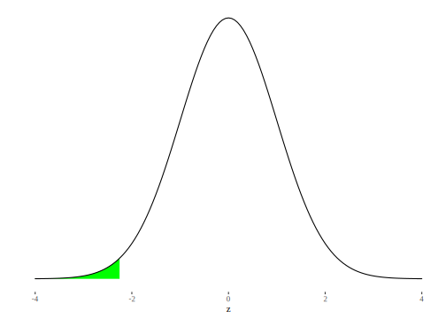
Esta probabilidad es:
## [1] 0.01222447Indica la probabilidad de hallar niños que al nacer tengan pesos inferiores a los 1500 gramos. En términos frecuenciales, indica que aproximadamente de cada 1000 varones nacidos a término, 12 tienen peso inferior a 1500 gramos.
Del mismo modo podemos operar si nos interesa conocer la probabilidad de hallar niños que nazcan con peso comprendido entre 3500 y 4500 gramos. Transformando cada uno de los valores se obtiene:
\[x = 3500 \rightarrow z = \frac{3500 - 3300}{800} = 0.25\]
\[x = 4500 \rightarrow z = \frac{4500 - 3300}{800} = 1.50\]
Entonces, que \(x\) (el peso al nacer) esté entre 3500 y 4500 equivale a que \(z\) (cantidad de desviaciones estándar) se encuentre entre 0.25 y 1.50. Esto se expresa simbólicamente así:
\[P(3500 < x < 4500) = P(0.25 < z < 1.50)\]
Y se representa gráficamente así:
En términos de:
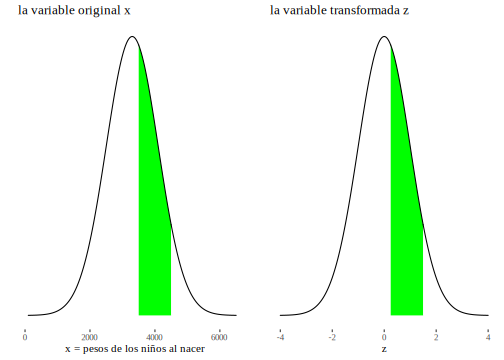
Para calcular el área comprendida entre los dos puntos, es decir la probabilidad de hallar a \(x\) entre 3500 y 4500, restamos, a la probabilidad acumulada hasta \(z=1.50\), la acumulada hasta \(z=0.25\):
\[P(3500 < x < 4500) = P(0.25 < z < 1.50) = P(z < 1.50) - P(z < 0.25)\]
La última operación da:
## [1] 0.3345Leemos el resultado diciendo que la probabilidad de hallar personas que hayan nacido con un peso comprendido entre los 3500 y los 4500 gramos es de \(0.3345\).
Toda variable que puede modelarse con una distribución normal puede transformarse a puntaje \(z\) y así hallar la probabilidad asociada a diferentes intervalos.
Hemos realizado las operaciones de este modo hasta aquí, porque es importante tener clara la relación entre las variable concreta que se mide u observa, con la variable abstracta, \(z\). Sin embargo, es posible solicitar las probabilidades a cualquier software o calculadora de probabilidades a partir de los valores de la variable original, siempre y cuando se informe la media y la desviación estándar. Para obtener el resultado de manera directa, sin pasar por \(z\), aa probabilidad es:
\[P(3500 < x < 4500)\]
Que se calcula como la diferencia entre la probabilidad acumulada hasta 4500 menos la acumulada hasta 3500.
\[P(3500 < x < 4500) = P(x < 4500) - P(x < 3500)\]
Al final del capítulo veremos la manera de pedir esto a R, para obtener:
## [1] 0.3344865Es el mismo resultado al que habíamos llegado a través de la
transformación a puntaje \(z\), pero ahora pidiéndola directamente desde
\(x\).
Aunque éste sea el procedimiento más cómodo para calcular
probabilidades, es necesario estar familiarizado con la distribución
normal estándar (en \(z\)), por los usos que haremos en los próximos
capítulos.
La distribución normal tiene un uso muy amplio y varios campos de aplicación. Más adelante veremos que para aplicar algunos procedimientos de análisis, es necesario que los datos provengan de una distribución normal, y existen pruebas para verificar que esto se cumpla. Una primera aproximación para ver si un conjunto de datos tiene distribución cercana a la normal es observar el histograma y evaluar si su forma se aproxima a la normalidad: si es unimodal y aproximadamente simétrica, es decir si la mediana es semejante a la media. Luego se calculan los coeficientes de curtosis y asimetría y, si éstos están entre \(-0.50\) y \(+0.50\), puede aceptarse, en primera instancia, la normalidad de los datos.
8.4 La idea de grados de libertad
Antes de avanzar hacia los otros modelos de probabilidad que presentaremos en este capítulo, es necesario tener una idea aproximada de un concepto que juega un papel de importancia en esas distribuciones: el de “grados de libertad”, un número que, como veremos enseguida, determina la forma de algunas distribuciones. Se trata de un concepto matemático complejo, al que vamos a definir como el número de observaciones linealmente independientes que existen en una suma de cuadrados47, pero del que haremos un uso exclusivamente instrumental. Su denominación es gl o bien df en inglés (degrees of freedom).
Consideremos el caso del cálculo de la varianza, cuyo numerador es: \(\sum_{i = 1}^{n}(x_{i} - \overline{x})^{2}\). Que es la suma de \(n\) términos, cada uno de ellos elevado al cuadrado. Identificar los grados de libertad de esa expresión equivale a responder a ¿cuántos términos de esa suma no dependen del valor que asumen los demás? Supongamos que se conoce la media muestral; esto establece un número fijo para la suma de las \(n\) observaciones: \(x_{1}, x_{2}, \ldots, x_{n}\), por lo que solo \(n-1\) de ellas pueden elegirse “libremente”, la última observación queda determinada.
Por ejemplo, si se trata de cuatro observaciones de las que sabemos que su media es cinco, entonces la suma de los cuatro números debe ser 20 ¿Cuáles son los valores posibles para las cuatro observaciones \(x_{1}, x_{2}, x_{3}, x_{4}\)? Hay infinitas combinaciones posibles que darían suma igual a 20, fijemos arbitrariamente algunos de los valores: \(x_{1}=3, x_{2}=4, x_{3}=4\), estos tres números suman 11, por lo que el cuarto solo puede ser 9 (para lograr la suma de 20 y que entonces la media sea 5). Otra combinación posible de valores es \(x_{1}=4, x_{2}=5, x_{3}=10\), con lo que \(x_{4}=1\) necesariamente. Cualquiera sea la elección que se haga, siempre serán tres de los cuatro valores los que puedan elegirse libremente; decimos entonces que los grados de libertad son tres.
En general, para este problema, los grados de libertad se calcularán como \(n-1\), donde \(n\) es el número de observaciones, diremos así que, de \(n\) observaciones, \(n-1\) son independientes, si se fija el resultado de la suma.
Una situación diferente es cuando se trata con una tabla de doble entrada con frecuencias marginales fijas; allí los grados de libertad se interpretan de modo distinto. No están relacionados con el número de observaciones sino con la dimensión de la tabla. Veamos la siguiente tabla de dos por tres, con frecuencias marginales fijadas:
| A | B | C | Total | |
|---|---|---|---|---|
| R | 10 | |||
| S | 30 | |||
| Total | 5 | 10 | 25 | 40 |
En ella se relacionan dos variables cuyas categorías son \(A\), \(B\) y \(C\) para la de las columnas y \(R\) y \(S\) para la de las filas. En la tabla, hemos fijado las frecuencias marginales. No hay dudas que hay infinitos valores posibles para las frecuencias conjuntas que podrían sumar lo que piden las marginales. Nos preguntamos ¿Cuántas de las frecuencias de las celdas (frecuencias conjuntas) pueden elegirse libremente? Si elegimos el valor 2 para la celda \(RA\), queda determinado un 3 en la celda \(SA\) (para que cumpla con sumar 5 verticalmente). Si luego elegimos un 4 en la celda \(RB\), la \(SB\) queda determinada a ser 6 (para sumar 10 en la segunda columna). Al mismo tiempo, la celda \(RC\) debe ser también 4 para sumar 10 en la primera fila y también se determina la celda \(SC\), que no puede ser sino 21, para sumar 30 en la segunda fila y 25 en la tercera columna. La tabla queda así completada, solo las celdas \(RA\) y \(RB\) fueron elegidas, las demás quedaron determinadas por la exigencia de respetar las frecuencias marginales.
| A | B | C | Total | |
|---|---|---|---|---|
| R | 2 | 4 | 4 | 10 |
| S | 3 | 6 | 21 | 30 |
| Total | 5 | 10 | 25 | 40 |
¿Cuántos serán los grados de libertad en este ejemplo?, de las seis celdas que debían completarse con frecuencias, solo 2 pudieron elegirse libremente. Éstos últimos son los grados de libertad: 2.
De manera general, para una tabla de dimensión \(f \: X \: c\) (donde \(f\) es la cantidad de filas y \(c\) la de columnas, como antes), los grados de libertad se calculan multiplicando \((f-1)\) por \((c-1)\). En la tabla que acabamos de usar como ejemplo, la dimensión es 2 por 3, por lo que los grados de libertad son \((2-1)*(3-1)= 1*2=2\), que son las dos celdas cuyas frecuencias pudimos fijar “libremente”.
A los fines de nuestro curso, esta introducción a la idea de grados de libertad es suficiente, el concepto es amplio y su tratamiento más profundo exigiría algunos conocimientos de álgebra lineal, que no necesitamos desarrollar aquí.
8.5 La distribución ji cuadrado (\(\chi^{2}\))
Esta distribución es el primer modelo que veremos con forma asimétrica48. Una de sus aplicaciones es la estimación de la varianza, nosotros la utilizaremos más adelante, cuando tratemos sobre estadística no paramétrica, en especial para probar si una variable puede modelarse con cierta distribución (pruebas de bondad de ajuste) y también para analizar la independencia entre variables nominales. Del mismo modo en que tratamos a la distribución normal, no haremos uso de la fórmula para calcular probabilidades, sino que las pediremos a un software.
Además de la forma asimétrica, hay otra diferencia con la distribución normal, la \(\chi^{2}\) no es una distribución única: no es suficiente especificar un valor de la variable para conocer su probabilidad acumulada sino que la forma que tenga dependerá de los recientemente mencionados “grados de libertad”, los cuales en una primera aproximación tomaremos como \(n-1\), donde \(n\) es el tamaño de la muestra.
Las figuras 8.2, 8.3 y 8.4 muestran las formas diferentes que tiene la distribución \(\chi^{2}\) para diferentes valores de los \(gl\), el eje horizontal indica los valores de la variable \(\chi^{2}\). Al igual que en la normal, las probabilidades se representan como áreas bajo la curva.
Figura 8.2: distribución \(\chi^{2}\) con 1 grado de libertad.
Figura 8.3: distribución \(\chi^{2}\) con 3 grados de libertad.
Figura 8.4: distribución \(\chi^{2}\) con 10 grados de libertad.
Los gráficos muestran que a medida que se incrementan los grados de libertad, la forma de la distribución gana en simetría y se asemeja a la distribución normal.
Para hallar las probabilidades correspondientes a valores de la variable, usaremos nuevamente el comando de R que provee probabilidades bajo modelos especificados; al final del capítulo veremos los comandos para hacerlo. Para hallar la probabilidad acumulada hasta el valor 8 bajo un modelo \(\chi^{2}\) con \(10\) grados de libertad, obtenemos:
## [1] 0.3711631La información requerida para el cálculo (los argumentos) son el valor de la variable (\(8\)) y los grados de libertad del modelo (\(10\)). Gráficamente se ubica como se ve en 8.5:

Figura 8.5: Área correspondiente a la probabilidad acumulada hasta el valor 8 bajo un modelo \(\chi^{2}\) con 10 grados de libertad. \(P(\chi^{2}_{10}) \leq 8\)
Y se escribe:
\[P(\chi_{10}^{2} \leq 8) = 0.3712\]
Para el área superior a 8, se complementa la probabilidad acumulada. \[P(\chi_{10}^{2} > 8) = 1-P(\chi_{10}^2 \leq 8)= 1-0.3712=0.6288\]
Que es la superficie sombreada en el gráfico 8.6.
Figura 8.6: Área correspondiente a la probabilidad acumulada desde el valor 8 bajo un modelo \(\chi^{2}\) con 10 grados de libertad. \(P(\chi^{2}_{10}) > 8\)
Para encontrar cuantiles bajo este modelo, se debe contar como argumentos: la probabilidad acumulada y los grados de libertad, el comando adecuado (ver al final del capítulo) devuelve el valor de la variable \(\chi^{2}\). Por ejemplo, el cuantil 0.95 (percentil 95) de una distribución \(\chi^{2}\) con 15 grados de libertad es:
## [1] 24.99579\[P_{95}=24.99\] Dicho de otra manera, el 5% de los valores de la variable \(\chi^{2}\) con 15 grados de libertad, supera al valor 24.99. O también, los valores superiores a 24.99 tienen probabilidad menor a 5% de obtenerse bajo este modelo.
La distribución \(\chi^{2}\) tiene muchas aplicaciones, una de las más frecuentes es para poner a prueba la independencia entre dos variables nominales. El vínculo entre esta distribución y el puntaje \(\chi^{2}\) que ya se mencionó, se verá más adelante.
8.6 La distribución t de Student
El tercer modelo especial de probabilidades para variables continuas que nos interesa describir es la distribución t, conocida como “de Student”, por el seudónimo que utilizaba quien la aplicó por primera vez, William Gosset49 Student (1908a).
Se trata de una distribución que, como la normal es simétrica y como la \(\chi^{2}\) depende de los grados de libertad50. Su forma es la de los gráficos 8.7, 8.8 y 8.9 y varía dependiendo de los grados de libertad.
Figura 8.7: Distribución t de Student con 3 grados de libertad
Figura 8.8: Distribución t de Student con 15 grados de libertad
Figura 8.9: Distribución t de Student con 60 grados de libertad
A partir de 30 grados de libertad, la distribución toma una forma que va haciéndose más similar a la normal. Las probabilidades acumuladas se
buscan con R, con el comando dt, que tiene como argumentos el
valor de la variable y los grados de libertad. La probabilidad que una variable con distribución \(t\) con \(un\) grado de libertad, esté por debajo del valor \(2\) se escribe:
\[P(t_{1} \leq 2)\]
Solicitado a R, se debe informar el valor de la variable (\(2\)) y los grados de libertad (\(1\)):
## [1] 0.8524164Que dice que \[P(t_{1} \leq 2)=0.8524\]
Su ubicación gráfica es la de 8.10:
Figura 8.10: Área correspondiente a la probabilidad de hallar una variable con ditribución t con un grado de libertad por debajo de 2
Como en las otras distribuciones, el área superior se calcula como el complemento: \[P(t_{1} > 2)=1-P(t_{1}\leq2)=1-0.8524=0.1476\]
Para ver los efectos del cambio en los grados de libertad, vamos a comparar la probabilidad que una variable t con 30 grados de libertad supere a 2, es decir:
\[P(t_{30} > 2)\]
Pedido a R resulta:
## [1] 0.0273Los dos resultados tienen las representaciones gráficas de las figuras 8.11 y 8.12.
Figura 8.11: \(P(t_{1}>2)\)
Figura 8.12: \(P(t_{30}>2)\)
En los gráficos y en los valores de las probabilidades se ve que el aumento de los grados de libertad en la distribución t tiene el efecto de reducir la probabilidad de los valores extremos.
Los percentiles de la distribución t se solicitan, si se conocen los grados de libertad y el percentil, por ejemplo, el percentil 95 bajo un modelo t con 1 grado de libertad es:
## [1] 6.3138Y el mismo percentil, si la distribución tiene 30 grados de libertad es:
## [1] 1.6973Esto quiere decir que un valor t como por ejemplo 3, se considerará extremo bajo una distribución con 30 grados de libertad, pero será un valor esperable si la distribución tiene 1 grado de libertad.
Cuando trabajemos con inferencia, veremos que la distribución t se aplica en reemplazo de la normal, cuando se trabaja con muestras pequeñas y que se va volviendo más equivalente a ella a medida que las muestras son de mayor tamaño.
8.6.1 La distribución F
El último de los modelos de probabilidad que necesitamos para usar en los próximos capítulos en la realización de inferencias, es la distribución F de Fisher. Es una distribución asimétrica, no negativa y su forma depende de los valores de los grados de libertad del numerador y del denominador51. Es una curva muy asimétrica a la derecha cuando los grados de libertad son pocos y tiende a la normalidad a medida que aumentan los \(gl\). En las figuras 8.13 y 8.14 se ven dos casos de combinaciones de grados de libertad en el numerador y en el denominador:
Figura 8.13: Distribución F de Fisher con 3 grados de libertad en el numerados y 2 en el denominador
Figura 8.14: Distribución F de Fisher con 15 grados de libertad en el numerados y 10 en el denominador
En el cálculo de las probabilidades, ahora debemos informar los grados de libertad del numerador y del denominador separadamente. Para solicitar, por ejemplo, la \(P(F_{3,2} \leq 4)\), se indica el valor de la variable (4) y los grados de libertad del numerador y el denominador en ese orden (3,2):
## [1] 0.7936Es decir: \(P(F_{3,2} \leq 4)=0.7936\)
Cuyo gráfico se ve en 8.15.
Figura 8.15: Área correspondiente a \(P(F_{3,2}\leq 4)\)
El área superior es la diferencia a uno:
## [1] 0.2064De modo que \(P(F_{3,2} > 4) = 0.2064\).
El percentil 95 de una distrindución F con 3 grados de libertad en el numerador y dos en el denominador es:
## [1] 19.1643Es decir que \(P(F_{3,2}<19.16)=0.95\) Que implica que el 5% de los valores de la variable \(F_{3,2}\) superan a \(19.16\). \(P(F_{3,2}>19.16)=0.05\)
Cuando pedimos el mismo percentil de otra variable que tenga distribución \(F_{5,10}\), se obtiene:
## [1] 3.3258Los gráficos del \(P_{95}\) en las dos distribuciones se ven en 8.16 y 8.17.
Figura 8.16: Ubicación de \(P_{95}\) en una distribución \(F_{3,2}\)
Figura 8.17: Ubicación de \(P_{95}\) en una distribución \(F_{5,10}\)
También en esta distribución vemos que el aumento de los \(gl\) tiene el efecto de reducir la probabilidad de los valores extremos.
La distribución F es usada para comparar la dispersión de dos distribuciones, a través del cociente de las varianzas.
8.7 Hacerlo en R
8.7.1 Probabilidades exactas
Las probabilidades de valores particulares de la variable solo pueden calcularse para variables discretas, de ellas, solo hemos mencionado la binomial. Para calcular la probabilidad de un valor de esa variable, hay que especificar el número de repeticiones y la probabilidad de éxito en cada una al comando dbinom: dbinom(x, “cantidad de ensayos”, “probabilidad de éxito a cada ensayo”)
8.7.1.1 Ejemplo
Si una variable consiste en la cantidad de éxitos que se obtienen al repetir 15 veces un experimento que a cada repetición tiene probabilidad 0.20 de ser éxito, se trata de una distribución binomial con parámetros \(n=15\) y \(p=0.20\). La probabilidad de obtener exactamente 7 éxitos, que es \(B(x=7, n=15, p=0.20)\) se pide a R así:
## [1] 0.01381906Si se respeta el orden (\(x, n, p\)), no es necesario indicar qué representa cada número:
## [1] 0.01381906Para expresar el resultado redondeado a cuatro decimales:
## [1] 0.0138Este es el valor de la función de densidad binomial, no se calcula para variables continuas.
8.7.2 Probabilidades acumuladas
Para solicitar las probabilidades acumuladas hasta determinado valor (\(x\)) de la variable, que es la función de distribución, los comandos llevan una \(p\) delante del nombre del modelo: pbinom, pnorm, pchisq, pt, pf. Y según la distribución, deben indicarse los parámetros que la especifican:
- Binomial: pbinom(x, “cantidad de ensayos”, “probabilidad de éxito a cada ensayo”)
- Normal estándar: pnorm (z), la media vale cero y la desviación estándar, uno. No hace falta indicarlo.
- Normal: pnorm(x, “media”, “desviación estándar” )
- Ji cuadrado: pchisq(x, “grados de libertad”)
- t de Student: pt(x, “grados de libertad”)
- F de Fisher: pf(x, “grados de libertad del numerador”, “grados de libertad del denominador”)
El primer argumento (dentro del paréntesis) siempre es el valor de la variable.
8.7.2.1 Ejemplos
8.7.2.2 Normal
Si \(x\) tiene distribución normal con media 5 y desviación estándar 2, la \(P(x<6.3)\), redondeada a cuatro decimales se pide:
## [1] 0.7422Y para un intervalo de valores, como \(P(6<x<8)\), se restan sus probabilidades acumuladas:
## [1] 0.24178.7.2.3 Chi cuadrado
La probabilidad de hallar una variable con distribución \(\chi^2\) con 15 grados de libertad, por debajo de 10, se escribe \(P(\chi^2_{15}<10)\) yse solicita:
## [1] 0.1802601Redondeado a cuatro decimales:
## [1] 0.18038.7.3 Cuantiles
Para hallar cuantiles, los comandos tienen una \(q\) delante del nombre del modelo: qbinom, qnorm, qchisq, qt, qf. Y debe indicarse el cuantil que se busca, junto a los parámetros que corresponden a cada distribución. Si están expresados como percentiles, se los debe dividir por cien, este argumento es siempre un número menor que uno. Llamando q al cuantil que interesa encontrar, la solicitud a R para cada modelo es:
- Binomial: qbinom(\(q\), “cantidad de ensayos”, “probabilidad de éxito a cada ensayo”)
- Normal estándar: qnorm (\(q\)), la media vale cero y la desviación estándar, uno. No hace falta indicarlo.
- Normal: qnorm(\(q\), “media”, “desviación estándar” )
- Ji cuadrado: qchisq(\(q\), “grados de libertad”)
- t de Student: qt(\(q\), “grados de libertad”)
- F de Fisher: qf(\(q\), “grados de libertad del numerador”, “grados de libertad del denominador”)
8.7.3.1 Ejemplos
8.7.3.1.1 Binomial
Manteniendo el modelo binomial de los ejemplos anteriores (\(n=15\) y \(p=0.20\)), podemos conocer, por ejemplo, el percentil 90, es decir, el valor de la variable (número de éxitos) por debajo del cual está el 90%. En este caso, \(q=0.90\) y los parámetros son los mismos que antes:
## [1] 5Que indica que hay una probabilidad 0.90 que el número de éxitos no supere a cinco.
8.7.3.1.2 Normal estándar
Puntaje \(z\) que acumula el 75% de los casos, es decir, se busca el \(P_{75}\) de una distribución normal estándar
## [1] 0.6744898Con lo que \(P(z<.6745)=0.75\)
El \(z\) que deja \(3\%\) por encima es el cuantil 0.97 (o \(P_{97}\)) y vale
## [1] 1.8807948.7.3.1.3 Normal
Si \(x\) tiene una distribución normal con media 100 y desviación estándar 15, el cuantil 99 de esa distribución es:
## [1] 134.8952Que indica que el \(99\%\) de los casos está por debajo de ese valor, o que solo el \(1\%\) lo supera
8.7.3.1.4 Chi cuadrado
Si una variable tiene distribución \(\chi^2\) con \(5\) grados de libertad, su percentil 95 es:
## [1] 11.0705Que se escribe \(P(\chi^2_5<11.07)=0.95\). El \(5\%\) de los casos está por encima de este valor.
8.7.4 Áreas centrales
En lo que sigue será frecuente que se necesiten percentiles de la variable que delimitan determinadas áreas centrales de la distribución. Cualquiera sea el modelo de probabilidad que se use, suele denominarse (\(1-\alpha\)) al área central, con lo que \(\alpha\) es el área que queda por fuera de la zona central, dividida en dos. Los cuantiles que delimitan esa área central de (\(1-\alpha\)) son (\(\frac{\alpha}{2}\)) y (\(1-\frac{\alpha}{2}\)).
Por ejemplo, para determinar cuáles son los valores de una distribución \(\chi^2\) con 13 grados delibertad que delimitan un 90% de área central, calculamos \(\alpha\), que es el 10% restante y los cuantiles son: 0.05 (\(\frac{\alpha}{2}\)) y 0.95 (\(1-\frac{\alpha}{2}\)).
## [1] 5.891864## [1] 22.36203Son los percentiles 5 y 95 (\(P_5\) y \(P_{95}\)), que gráficamente delimitan el área de la figura 8.18:
Figura 8.18: Área central del 90% bajo una distribución \(\chi^2\) con 13 grados de libertad
References
Con lo que hemos elegido tomar como éxito el resultado cara↩︎
El nombre “normal” de este modelo no hace referencia al sentido coloquial del término, como juico acerca de la salud o el comportamiento humano, sino a un modelo de distribución en el que es más frecuente hallar valores cercanos al promedio y resultan igualmente infrecuentes valores extremos mayores o menores.↩︎
Este modelo tiene una expresión matemática más compleja que la primera que vimos, solo a título ilustrativo la mencionamos: \[P(z < x) = \frac{1}{\sqrt{2\pi}}\int_{- \infty}^{x}e^{- \frac{z^{2}}{2}} dz\] jamás la usaremos para calcular probabilidades.↩︎
1777-1855, matemático, astrónomo y físico alemán. El primero en expresar la función y calcular áreas fue Abraham De Moivre matemático francés que trabajó en Inglaterra junto a Newton y Halley (Tankard 1984).↩︎
El símbolo de esta operación es \(\int\), una \(S\) estilizada, que indica su origen en una suma.↩︎
Solo nos interesará contar con una idea intuitiva y ejemplos de aplicación.↩︎
La definición de la variable \(\chi^{2}\) con \(n\) grados de libertad es la suma de \(n\) variables aleatorias normales estándar elevadas al cuadrado: \(\chi^{2} = \sum_{i = 1}^{n}z_{i}^{2}\), en la que cada \(z\) es una variable distribuida normalmente con media cero y desviación estándar igual a uno.↩︎
Químico y Estadístico inglés (1876-1937), era empleado de la cervecería Guiness y allí desarrolló procedimientos adecuados para trabajar con pequeñas muestras. Una de las versiones acerca de por qué publicó con el seudónimo Student es que la empresa temía que se revelaran secretos industriales.↩︎
La definición de la variable con distribución \(t\) con \(n\) grados de libertad es el cociente entre una variable con distribución normal estándar y la raíz cuadrada de una \(\chi^{2}\) dividida por sus grados de libertad: \(t = \frac{z}{\sqrt{\frac{\chi_{n}^{2}}{n}}}\).↩︎
Estos nombres para los grados de libertad se originan en que la \(F\) se define como el cociente de dos distribuciones \(\chi^{2}\), cada una dividida por sus grados de libertad: \(F_{n_{1},n_{2}} = \frac{\frac{\chi_{1}^{2}}{n_{1}}}{\frac{\chi_{2}^{2}}{n_{2}}}\).↩︎